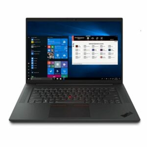

SFESIFIKASI LAPTOP LENOVO
BERIKUT ADALAH SFESIFIKASI LAPTOP LENOVO
Spesifikasi Lenovo ThinkPad X1 Nano:
Layar: 13 inci, 2160 x 1350 piksel
Prosesor: Up to 11th Gen Intel Core i7 vPro
Grafis: Intel Iris Xe
RAM: Up to 16GB LPDDR4x
Storage: Up to 1 TB SSD
Sistem Operasi: Up to Windows 10 Pro
Kamera: Hybrid infrared (IR) / 720p HD with webcam privacy cover
Baterai: Up to 13 hours* 48Wh (MM18)
pesifikasi Lenovo IdeaPad Gaming 3i:
Layar: 15.6 inci, 1920 x 1080 piksel
Prosesor: Intel Core i5-10300H
Grafis: NVIDIA GeForce GTX 1650 Ti
RAM: Up to 16GB DDR4
Storage: 512 GB SSD
Sistem Operasi: Windows 10 Home
Kamera: 720p HD
Baterai: Up to 9.6 hours with Quick Charge

Spesifikasi Lenovo Yoga 9:
Layar: 14 inci, 1920 x 1080 piksel
Prosesor: Intel 11th Gen Core i7-1185G7
Grafis: Intel Iris Xe Graphics
RAM: 16 GB
Storage: 512 GB SSD
Sistem Operasi: Windows 10 Pro
Kamera: HD camera with webcam privacy shutter
Baterai: Up to 60 WHr
Back